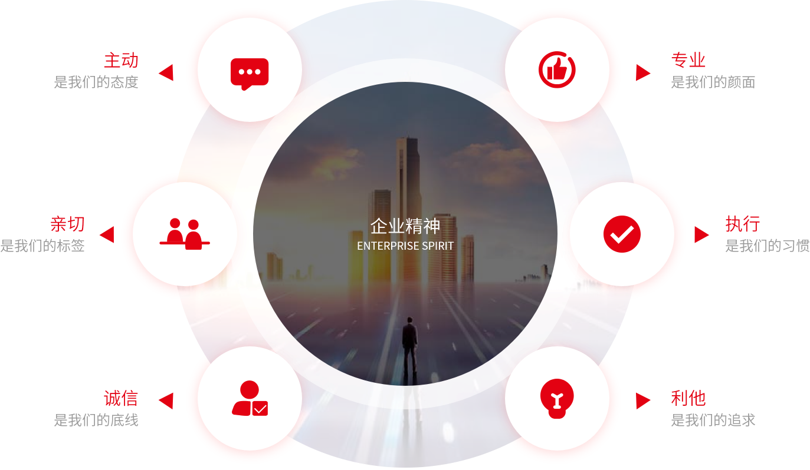

公司简介
组织架构
历史沿革
荣誉资质
全国布局
关于我们
>
公司简介
公司介绍
ZHOU YUAN GROUP
周原集团股份有限公司成立于 2008 年，是一家专业化、市场化、现代化的综合型服务运营集团，2019 年加入中国物业管理协会，2020年荣膺
“中国物业服务百强企业”
。
周原集团以武汉·中国光谷为中心，深耕湖北，辐射全国，业务范围涵盖物业管理、商业运营、智慧空间、资产管理及大健康产业等领域。集团现有技术骨干 600 余人，共同组成了一支朝气蓬勃，富有实践经验和创新精神的专业精英团队。
周原始终聚焦于关注和解决客户需求，力争实现“周管家服务100年有效”的对客服务承诺；与合作伙伴互助相携，实现合作共赢，构筑良性健康的商业生态圈；与政府主管部门、行业保持互通交流，最大化向客户提供有价值、有温度的优质服务。
周原集团凭借自身的技术、人才、文化等优势，整合多元化的优质资源，充分利用大数据、物联网等现代化管理手段，全力推行“物业服务+互联网+金融”模式，实行全流程“管理+服务+运营”，构建专业化服务体系，助推城市功能升级，引领行业发展新风向。
周原集团全力推行
“物业服务+互联网+金融”模式
“中国物业服务百强企业”
周原·溯源
TRACING THE SOURCE
周原一名最早出自《诗经•大雅•绵》：“周原膴膴,堇荼如饴”，意为周原水土肥沃，物产丰富甜美，原之得名以此。
《史记•周本纪》正义曰：“因太王所居周原，因号曰周。”一个古老文化的肇基，一片寻根问祖的圣地。凤凰于飞，翙翙其羽，讲述着三千年前的恢弘与壮丽。
岐山周原，华夏在这里生根，周朝在这里肇基，周文化在这里启源。博大精深的周文化是华夏文明的源头，对中华民族的民族性格与民族精神产生了深远的影响，奠定了其在全国乃至世界文化坐标上的至高地位。 这里是凤鸣岐山传说地，这里是周公解梦起源地，这里是周礼创作形成地，这里是周易推演发祥地，这里是周朝兴邦诞生地，这里是儒道追溯同源地
这里是中国周原，是风水宝地，是聚宝盆，也是周原集团命名由来！
周原梦：客户幸福 企业繁荣 产业报国
让我们共同奋斗，谱写周原恢弘壮丽的诗篇，戮力实现我们伟大的周原梦！
企业使命
Enterprise mission
为顾客创造价值、为员工创造机会、为股东创造财富
企业愿景
Enterprise vision
打造优质、高效、可持续的综合型服务集成平台，成为行业领先、服务卓越的创新型整合服务运营商。
